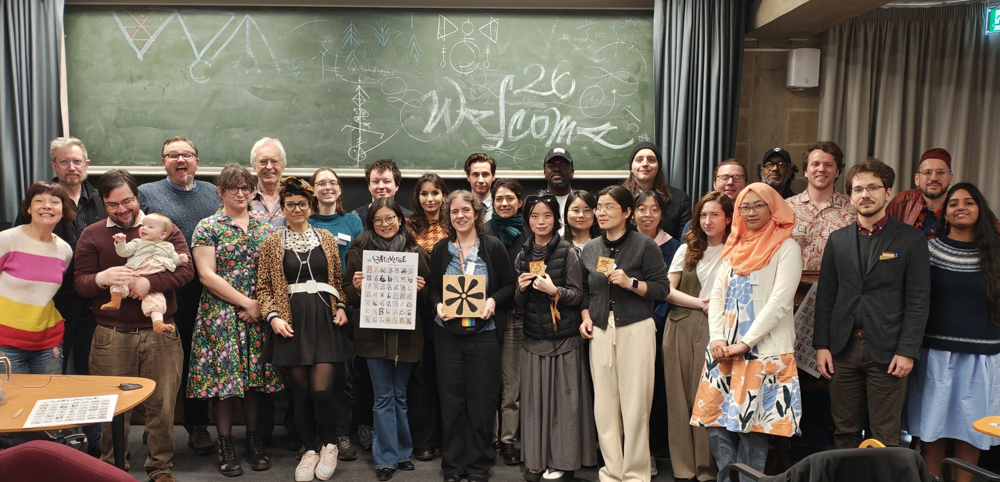

Conference Presentation会议报告
Writing As Visual Engagement / WAVE 2
Participatory Visuality in Yi Script: Minority Writing and Cultural Engagement in China彝文的参与式视觉性：中国少数民族文字与文化参与



Conference Presentation会议报告
Participatory Visuality in Yi Script: Minority Writing and Cultural Engagement in China彝文的参与式视觉性：中国少数民族文字与文化参与
